Лучшие дистанционные курсы по психологии - профессиональная переподготовка
Психологическое консультирование – Московский институт психологии
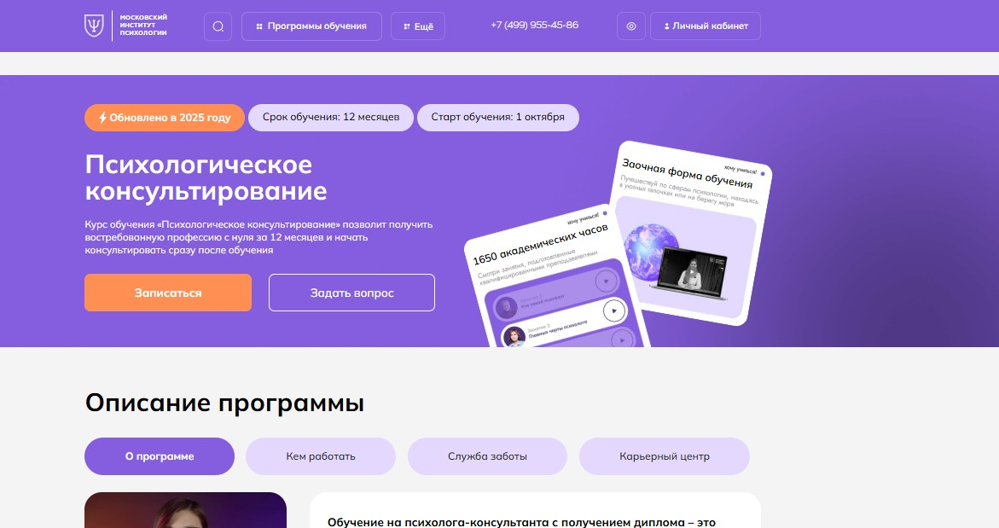⭐ Рейтинг: 5.0
- Сайт: mip.institute/professions/konsultirovanie/psiholog-konsultant
- Полная стоимость: от 265 000 рублей в год со скидкой 30%. Возможен налоговый вычет по НДФЛ за обучение.
- Рассрочка: от 15 000 ₽ в месяц — до 12 месяцев, без переплат.
- Длительность: 12 месяцев — заочная форма с полной поддержкой кураторов.
- Документ: Диплом о профессиональной переподготовке с квалификацией «Психолог-консультант» и специализацией «Психотерапия в психологическом консультировании».
- Трудоустройство: Карьерный центр помогает выстроить частную практику, подключает к профессиональным сообществам ОППЛ и АППП, участвует в трудоустройстве через партнёрские практики.
Особенности курса:
Обучение построено на балансе теории и практики: 644 академических часа — это работа с кейсами, интервизии, супервизии и отработка навыков в безопасной среде. Программа включает балинтовские группы для профилактики выгорания и регулярные встречи с наставниками. Вы участвуете в более чем 800 вебинарах, получаете доступ к библиотеке профессиональных материалов и участвуете в мероприятиях Центра карьеры. Формат дистанционный, подходит тем, кто совмещает учёбу с работой или семьёй. Все материалы — в личном кабинете на образовательной платформе СДО.
Преподаватели курса:
-
Долгушина Юлия Владимировна — практикующий психолог с многолетним опытом в консультативной работе.
-
Точилина Татьяна Васильевна — эксперт в области клинической психологии и психодиагностики.
-
Гиль Людмила Владимировна — специалист по психотерапевтическим методикам и работе с эмоциональными состояниями.
-
Сергачева Ксения Викторовна — психолог с фокусом на личностном развитии и межличностных отношениях.
-
Валуев Олег Сергеевич — практикующий психотерапевт, кандидат наук, ведущий супервизий и мастер-классов.
Кратко о программе курса:
- Введение в профессию — основы этики, личностные качества консультанта.
- Общая психология — когнитивные процессы, внимание, память, мышление.
- Психология личности — типологии, мотивация, самооценка, установки.
- Возрастная и развитческая психология — особенности разных этапов жизни.
- Анатомия и физиология центральной нервной системы.
- Клиническая психология и патопсихология — диагностика и расстройства.
- Нейропсихология — работа с когнитивными нарушениями, практикум.
- Психосоматика — влияние эмоций на тело, работа с соматическими жалобами.
- Практикумы — разбор демо-сессий, отработка техник консультирования.
- Интервизии — 12 встреч, обсуждение сложных случаев в группе коллег.
- Балинтовские группы — поддержка, профилактика выгорания.
- Практические навыки — работа в парах и трио, супервизия кейсов, отработка запросов.
Чему научитесь:
Научитесь проводить диагностику, работать с тревогой, низкой самооценкой, семейными и межличностными конфликтами. Сможете вести частную практику, использовать современные подходы и соблюдать этические нормы.
Преимущества и особенности:
- Полностью дистанционное обучение с доступом к платформе 24/7.
- Практико-ориентированная программа: более 600 часов практики и супервизий.
- Поддержка наставника ежемесячно, помощь в освоении техник и разборе кейсов.
- Возможность присоединиться к профессиональным ассоциациям ОППЛ и АППП.
- Более 1200 записанных вебинаров и 16 мероприятий в месяц — бесплатных и платных.
- Выпускники получают диплом, позволяющий легально вести частную практику.
- Рассрочка без переплат и налоговый вычет за обучение.
Читайте отзывы учеников:
Студенты отмечают чёткую структуру курса, оперативную обратную связь от преподавателей, доступность материала и поддержку кураторов. Многие подчёркивают ценность интервизий и балинтовских групп, которые помогают развиваться как специалисту и избежать выгорания. Удобный онлайн-формат, возможность учиться в любом городе и гибкий график — частые плюсы в отзывах. Выпускники отмечают, что курс действительно готовит к реальной работе с клиентами.
Практическая переподготовка психолога – Online Институт Smart
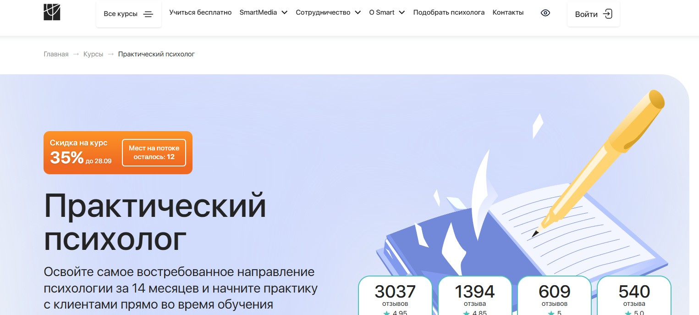⭐ Рейтинг: 5.0
- Сайт: smart-inc.ru/prakticheskij-psikholog
- Полная стоимость: от 234 900 ₽ со скидкой. Доступен налоговый вычет — верните 13% от суммы. Гранты на обучение не предусмотрены.
- Рассрочка: от 9 788 ₽/мес. на срок до 24 месяцев без переплат — проценты покрывает образовательный центр.
- Длительность: 14 месяцев, 1300 часов теории и практики.
- Документ: Диплом о профессиональной переподготовке с регистрацией в ФРДО и диплом MBA (по международным стандартам).
- Трудоустройство: Центр карьеры помогает начать практику: предоставляет первых клиентов, организует супервизии, коучинги и ведёт сопровождение после выпуска.
Особенности курса:
Обучение построено на практико-ориентированной методике: вы не просто изучаете теорию, а сразу применяете её на реальных кейсах. В программу включены терапевтические тройки, групповые супервизии, интервизионный чат и сессии «вопрос-ответ». Программа подходит как новичкам, так и тем, кто уже имеет образование в гуманитарной сфере. Все материалы доступны на интерактивной платформе 24/7. Обучение дистанционно, гибко подстраивается под график работы и личную жизнь. Институт сотрудничает с ОППЛ и АППП — это открывает доступ к профессиональному сообществу и повышает ценность квалификации на рынке.
Преподаватели курса:
-
Марина Сокольская — доктор психологических наук, доцент ВАК, 31 год стажа в преподавании, профессор кафедры психологии МИФИ.
-
Светлана Варнавская — сертифицированный коуч ICF, более 4000 часов практики, эксперт в области трансформационного коучинга и когнитивно-поведенческой терапии.
Кратко о программе курса:
- Научные основы психологического консультирования.
- Основные подходы и направления в психологии: гештальт, КПТ, системная терапия и др.
- Современные техники и приёмы: работа с запросами, построение доверительных отношений, кейс-анализ.
- Организационное консультирование: помощь в карьере, тимбилдинг, адаптация сотрудников.
- Групповое консультирование: ведение групп, управление динамикой, поддержка участников.
- Практические модули: 72 часа отработок в тройках, 20 часов супервизий, 120 часов интерактивных занятий.
- Дополнительные блоки: личностный рост, этика, юридические аспекты, маркетинг для психолога.
Чему научитесь:
Вы освоите ключевые навыки практикующего психолога: установление контакта, выявление мотивов клиента, ведение консультаций по личным, семейным и профессиональным запросам и применение техник в реальной практике.
Преимущества и особенности:
- Практика с реальными клиентами уже во время обучения.
- Диплом с государственной и международной легитимностью.
- Сопровождение личного ассистента и ментора-супервизора.
- Доступ к закрытому сообществу выпускников и эксклюзивным мероприятиям.
- Возможность начать обучение бесплатно с вводного модуля.
- Гарантированный запуск частной практики через поддержку центра карьеры.
- Скидка 35% до 21 сентября — ограниченное количество мест.
- Учёба сейчас, оплата — через месяц при оформлении рассрочки.
Читайте отзывы учеников:
Выпускники часто подчёркивают высокое качество преподавания, оперативность поддержки и эффективность практико-ориентированной программы. Многие отмечают, что уже через несколько месяцев обучения начали принимать первых клиентов. Благодаря чёткой структуре курса и вовлечённым наставникам, студенты чувствуют уверенность в своих навыках. Особенно ценят помощь в запуске частной практики и участие в профессиональных сообществах.
Профессия психолог-консультант – Talentsy
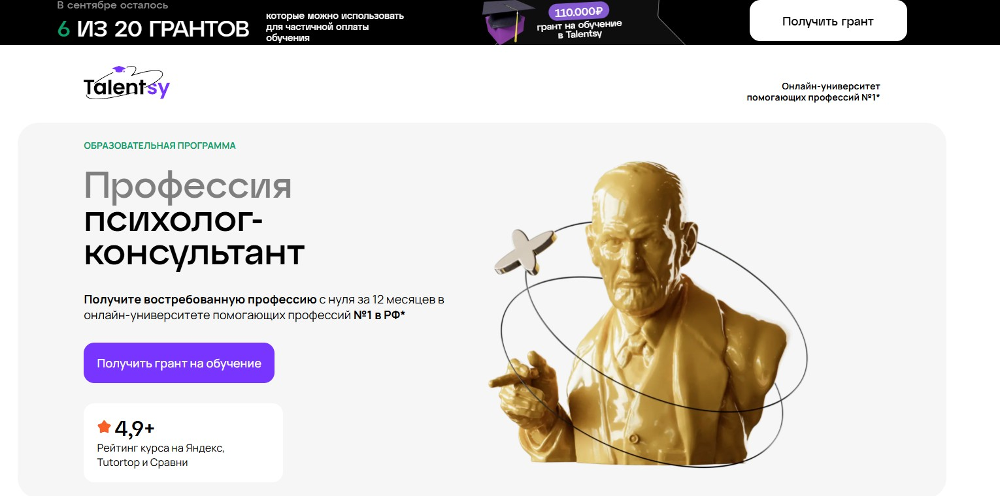⭐ Рейтинг: 5.0
- Сайт: talentsy.ru/professiya-psikholog/
- Полная стоимость: Обучение с грантом до 110 000 ₽. Возможность оформить налоговый вычет до 13% от суммы оплаты.
- Рассрочка: От 9 375 ₽ в месяц на срок до 24 месяцев без переплат — проценты покрывает образовательная платформа.
- Длительность: 12 месяцев.
- Документ: Диплом о профессиональной переподготовке установленного образца РФ и международный диплом MBA от учебного центра в Праге.
- Трудоустройство: Студентам предоставляются первые 10 потенциальных клиентов через сервис pomogayu.ru, помощь в продвижении личного бренда и построении частной практики.
Особенности курса:
Обучение построено на интегративном подходе: за год вы освоите 10 психологических направлений, включая когнитивно-поведенческую терапию, гештальт, психоанализ и арт-терапию. Программа включает 450 часов практики, работу в мини-группах, супервизии и разбор демосессий. Курс подходит с нуля — для поступления не нужно профильное образование. Учебная платформа доступна 24/7, материалы остаются навсегда. Поддержка кураторов, техническая служба и эксперт по личному бренду сопровождают до окончания обучения.
Преподаватели курса:
-
Ольга Виндекер — практикующий психолог с 30-летним стажем, член Российской Психотерапевтической Лиги, автор книг, теле- и радиоведущая.
-
Инна Васильева — доктор психологических наук, профессор, специалист в области психологии интуиции, автор более 170 научных статей.
-
Ксения Кунникова — кандидат наук, нейропсихолог, руководитель научных грантов РФФИ.
-
Елена Николаева — доктор биологических наук, заведующая кафедрой возрастной психологии РГПУ им. Герцена.
-
Рустам Муслумов — кандидат наук, преподаватель УрФУ, эксперт в области педагогической психологии.
-
Юлия Лебедева — кандидат наук, практикующий психолог, преподаватель с опытом более 20 лет.
Кратко о программе курса:
- Знакомство с профессией психолога-консультанта.
- Мозг и поведение человека.
- Основы психологического консультирования.
- Психология личности и диагностика.
- Возрастная психология в работе с клиентами.
- Психология семьи и сексуальности.
- Основы клинической психологии.
- Кризисная психологическая помощь.
- Современные модальности консультирования.
- Начало практической работы с клиентами.
- Создание личного бренда и продвижение в интернете.
Чему научитесь:
Освоите практические навыки консультирования, научитесь выявлять запросы клиентов, строить доверительные отношения и применять разные терапевтические подходы. Сможете начать частную практику уже во время обучения и зарабатывать от 100 000 ₽ в месяц.
Преимущества и особенности:
- Грант до 110 000 ₽ — осталось всего 6 мест в сентябре.
- 450 часов практики: отработка сессий, супервизии, интервизии, работа с реальными клиентами.
- Два диплома — российский и международный, позволяющие работать в РФ и за рубежом.
- Поддержка трудоустройства: первые клиенты, помощь в продвижении, привлечение аудитории.
- Преподаватели — ведущие эксперты и практикующие психологи с учёными степенями.
- Обучение с нуля без необходимости иметь профильное образование.
- Гибкий график: можно совмещать с работой, учиться с телефона или планшета.
- Студенты получают доступ к сообществу единомышленников, участвуют в живых встречах и конференциях.
Читайте отзывы учеников:
Абсолютное большинство студентов отмечают высокое качество преподавания, глубину и практико-ориентированность программы. Подчёркивают поддержку кураторов, скорость обратной связи и полезность материалов. Многие уже на втором-третьем месяце запускают частную практику и получают первые оплаченные сессии. Особенно ценят возможность начать зарабатывать уже во время обучения и получение клиентов через внутренний сервис.
Профессия психолог-консультант – Психодемия
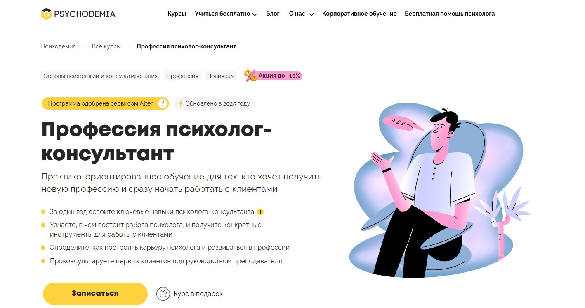⭐ Рейтинг: 4.9
- Сайт: psychodemia.ru/masterpsy
- Полная стоимость: от 265 000 ₽ с возможностью рассрочки на 24 месяца и налогового вычета до 13% от суммы.
- Рассрочка: от 11 041 ₽ в месяц на 24 месяца.
- Длительность: 14 месяцев.
- Документ: Диплом о профессиональной переподготовке (530 ак. часов) при наличии высшего образования; иначе — сертификат Психодемии.
- Трудоустройство: Поддержка в запуске частной практики, помощь в поиске первых клиентов, инструменты для этичного продвижения.
Особенности курса:
Программа сочетает глубокую теоретическую подготовку с интенсивной практикой, начиная уже с 2-й недели обучения. Курс ориентирован на тех, кто хочет с нуля освоить профессию и быстро выйти на рынок. Вы отработаете более 295 академических часов практики: тренировки в тройках, мини-группы в формате «аквариум», разбор демосессий и супервизия. Обучение ведётся под руководством практикующих психологов с научной базой. Программа одобрена сервисом Alter и обновлена в 2025 году, что гарантирует актуальность знаний. Вы получите не только диплом, но и реальный опыт работы с клиентами.
Преподаватели курса:
-
Мария Данина — кандидат психологических наук, основатель Психодемии, 17 лет опыта в консультировании и образовании.
-
Татьяна Альмухаметова — психотерапевт, супервизор, специалист по КПТ и схема-терапии, научный сотрудник лаборатории Психодемии.
Кратко о программе курса:
- Введение в профессию психолога: границы компетенций, этика, карьера.
- Развитие базовых навыков: эмпатия, активное слушание, рефлексия.
- Техники помощи: работа с тревожностью, низкой самооценкой, проблемами в отношениях.
- Частые запросы клиентов: выгорание, личные границы, мотивация, стресс.
- Профессиональные правила: конфиденциальность, супервизия, этика.
- Забота о себе: профилактика выгорания, баланс между работой и личной жизнью.
- Практика с реальными клиентами под супервизией.
- Дополнительный модуль: сложные случаи в практике.
- Бонус: продвижение психолога, юридические аспекты, КПТ.
Чему научитесь:
Научитесь работать с клиентами: определять запрос, ставить цели, строить план консультирования, применять конкретные методы. Получите уверенность, знания и опыт для старта практики и помощи людям.
Преимущества и особенности:
- Практика с реальными клиентами уже в процессе обучения под сопровождением супервизора.
- Более 295 часов отработки навыков: тройки, мини-группы, демосессии, интерактивный тренажёр с 100+ упражнений.
- Актуальный подход: обновлённая в 2025 году программа с акцентом на практические компетенции.
- Поддержка после курса: доступ к сообществу выпускников, мастермайндам, интервизиям и обмену опытом.
- Диплом установленного образца по гослицензии — право на ведение профессиональной деятельности.
- Инструменты для запуска практики: продвижение, позиционирование, поиск первых клиентов.
Читайте отзывы учеников:
Обучающиеся отмечают высокую практическую ценность курса, доступность материала и поддержку кураторов. Многие подчёркивают, что уже после нескольких месяцев обучения начали работать с клиентами. Особо ценят системный подход, чёткую структуру и возможность выбрать собственное направление в психотерапии. Студенты отмечают рост уверенности и навыков, которые можно применять сразу.
Профессиональная переподготовка клинического психолога – Институт прикладной психологии в социальной сфере
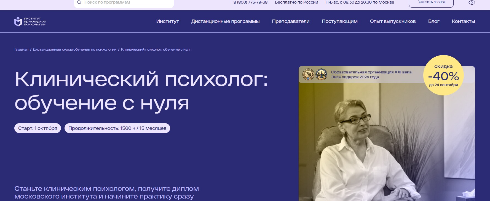⭐ Рейтинг: 4.9
- Сайт: ippss.ru/program/klinicheskaya-psikhologiya-s-nulya
- Полная стоимость: От 139 200 рублей, возможна рассрочка 0% от банка или оплата частями через Яндекс Пэй. Доступен налоговый вычет 13% от суммы.
- Рассрочка: До 12 месяцев без переплат при оформлении через банковскую рассрочку.
- Длительность: 15,5 месяцев (1560 академических часов).
- Документ: Диплом о профессиональной переподготовке с квалификацией «Клинический психолог». Зарегистрирован в ФИС ФРДО, действует по всей России.
- Трудоустройство: Помощь в старте карьеры — обучение продвижению, доступ к закрытому телеграм-каналу с вакансиями, карьерные консультации, стажировка у партнеров института.
Особенности курса:
Программа разработана на основе ФГОС ВО 37.03.01 «Психология» и профстандарта «Психолог в социальной сфере» (утв. Минтруда №716н). Обучение полностью дистанционное, доступно без профильного высшего образования. Курс сочетает фундаментальные знания и практику — студенты работают с реальными клиническими запросами, проходят диагностику, консультирование и психотерапию под руководством опытных наставников. Включены групповые практикумы, онлайн-консультации, супервизия и личные консультации. Доступ к материалам сохраняется навсегда после успешного окончания. Всё обучение ведётся на основании лицензии Департамента образования Москвы.
Преподаватели курса:
-
Николаева Ольга Юрьевна — семейный психолог, когнитивно-поведенческий терапевт, коуч ICF, кандидат наук.
-
Соловьева Светлана Борисовна — клинический и медицинский психолог, специалист по диагностике аутизма.
-
Морозова Ольга Александровна — клинический психолог, ведущая терапевтических групп, бизнес-тренер.
-
Дорофеева Елена Владимировна — преподаватель, эксперт по профессиональной этике в психологии.
Кратко о программе курса:
- Введение в профессию: этика, личностные риски, методические сложности, диагностические задания.
- Психология развития и возрастная психология — с акцентом на клинические аспекты.
- Методики диагностики и психокоррекции.
- Работа с тревогой, депрессией, паническими атаками, расстройствами пищевого поведения.
- Психосоматика, когнитивные нарушения, деменция, пограничные расстройства.
- Практические техники психотерапии: когнитивно-поведенческая, психодинамическая, системная.
- Составление программ для тренингов и консультирования.
- Групповые практикумы, кейсы, воркшопы и ролевые игры.
- Супервизия — групповая и индивидуальная.
- Обучение поиску клиентов, ведению практики и личному бренду.
Чему научитесь:
Освоите диагностические и терапевтические методики, научитесь проводить консультации, работать с кейсами, разрабатывать программы коррекции и реабилитации. Приобретёте навыки этичного продвижения и самостоятельной практики.
Преимущества и особенности:
- Обучение с нуля — не требуется высшее психологическое образование.
- Диплом государственного образца с правом официальной работы по специальности.
- Практико-ориентированная программа с реальными кейсами и супервизией.
- Поддержка на старте карьеры: стажировка, продвижение, помощь в трудоустройстве.
- Гибкий график — учёба 24/7 в личном кабинете на любом устройстве.
- Доступ к более чем 10 000 записям вебинаров и библиотеке профессиональных материалов.
- Беспроцентная рассрочка и возможность вернуть 13% через налоговый вычет.
Читайте отзывы учеников:
Слушатели отмечают высокий уровень преподавания, доступность материала и реальную применимость знаний в практике. Многие подчёркивают поддержку кураторов, ценят возможность стажировки и удобство дистанционного формата. Особенно часто упоминаются эффективные техники диагностики, супервизия и практическая направленность курса. Выпускники регулярно находят клиентов уже на этапе обучения.
Профессиональная переподготовка в практической психологии – Московский институт технологий и управления
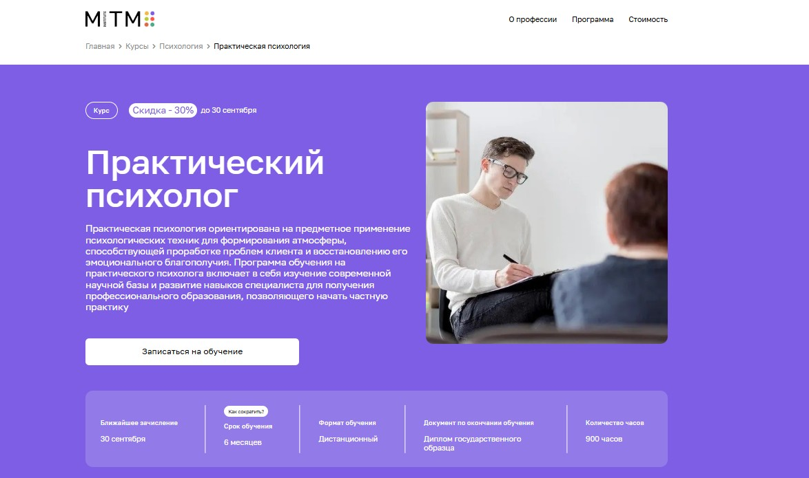⭐ Рейтинг: 4.9
- Сайт: mitm.institute/prakticheskaya-psihologiya--kurs
- Полная стоимость: 7 080 ₽ в месяц, с возможностью налогового вычета до 13% и возврата средств в первые две недели.
- Рассрочка: Беспроцентная рассрочка на 12 месяцев от «Тинькофф Банка».
- Длительность: 6 месяцев.
- Документ: Диплом государственного образца о профессиональной переподготовке.
- Трудоустройство: Поддержка в запуске частной практики, помощь в развитии личного бренда и построении карьеры.
Особенности курса:
Обучение построено на актуальных методиках, адаптированных под запросы современного рынка. Программа охватывает теорию и практику, включая психодиагностику, семейное консультирование и клиническую психологию. Формат полностью дистанционный, подойдёт тем, кто совмещает обучение с работой или заботой о семье. Участники получают доступ к закрытым киноклубам, Q&A-сессиям, супервизиям и демонстрационным встречам. Куратор сопровождает до получения диплома, отвечает на вопросы 24/7. Все материалы доступны в записи, а преподаватели — действующие специалисты с опытом от 7 до 25 лет.
Преподаватели курса:
-
Пронькина Анастасия — клинический психолог, член АКПП, специалист по когнитивно-поведенческой терапии.
-
Шелухина Анна — магистр психологии, психолог-консультант, сертифицированный арт-терапевт.
-
Леонова Светлана — аналитический и клинический психолог, сексолог, супервизор, работает с 2012 года.
Кратко о программе курса:
- Введение в профессию и профессиональная этика.
- Общая, возрастная и социальная психология.
- Психология личности и клиническая психология.
- Психодиагностика и основы организационной психологии.
- Этапы и процедуры психологического консультирования.
- Практикум по психодиагностике и семейному консультированию.
- Разбор клиентских кейсов и демонстрационных сессий.
- Практика: 44 часа практикумов и 10 часов супервизий.
- Бонусы: киноклуб, построение личного бренда, Q&A с экспертами.
Чему научитесь:
Научитесь проводить консультации по этическим стандартам, работать с запросами типа низкой самооценки, стресса, проблем в общении и самопознания. Освоите современные техники диагностики, коррекции и сопровождения клиентов.
Преимущества и особенности:
- Диплом с возможностью ведения частной практики.
- Обучение без отрыва от основной деятельности — удобно для занятых людей.
- Поддержка куратора и сообщество участников в Telegram для обмена опытом.
- Актуальная программа с фокусом на практическое применение знаний.
- Скидка 30% и бесплатный курс в подарок при поступлении до 20 сентября.
- Возможность вернуть деньги в первые 14 дней при неудовлетворённости.
Читайте отзывы учеников:
Выпускники отмечают высокую практическую ценность курса, удобство дистанционного формата и доступность материалов. Особенно ценят опытных преподавателей, своевременную поддержку кураторов и наличие диплома государственного образца. Многие начинают частную практику сразу после окончания. Те, у кого не было профильного образования, отмечают, что программа помогла уверенно войти в профессию без лишней теории.
Практическая психология. Технологии оказания психологических услуг населению и организациям – АНО «НИИДПО»
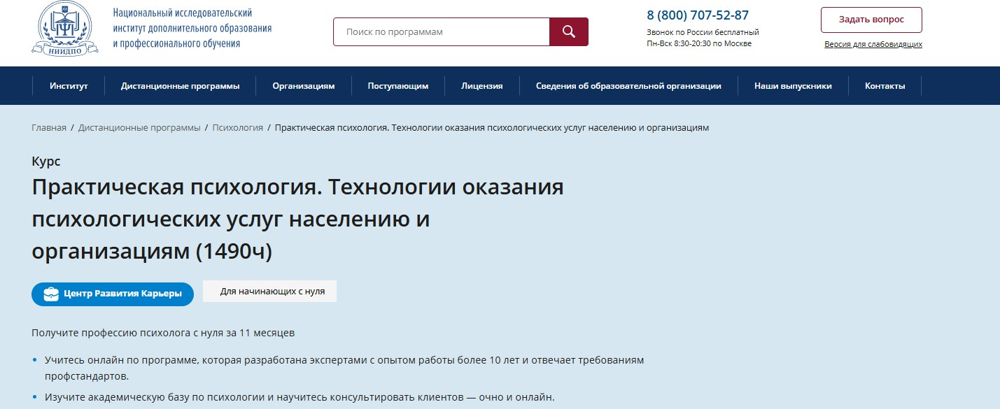⭐ Рейтинг: 4.8
- Сайт: niidpo.ru/seminar/prakticheskij-psiholog-1490-chasov
- Полная стоимость: 72 400 ₽, по акции — 64 700 ₽ до 19.09.2025. Возможен налоговый вычет — вернут до 13% от суммы.
- Рассрочка: От 6 035 ₽/мес на 12 месяцев без переплат и первого взноса. Есть оплата частями через Яндекс PAY.
- Длительность: 48 недель (11 месяцев), ускоренный формат — 35 недель (8 месяцев).
- Документ: Диплом о профессиональной переподготовке, действующий по всей России.
- Трудоустройство: Поддержка в запуске частной практики: помощь в продвижении, шаблоны для клиентов, вакансии в закрытом чате, подготовка к собеседованиям.
Особенности курса:
Программа подходит для тех, кто начинает с нуля и хочет стать квалифицированным специалистом. Вы освоите прикладные методы из психотерапии, психодиагностики, НЛП и коучинга. Обучение проходит онлайн — можно учиться с телефона или компьютера. Включены практические задания с обратной связью, вебинары от практикующих экспертов и доступ к более чем 13000 записей. Учебный план разработан с учётом ФГОС и профстандартов. После выпуска — бессрочный доступ к материалам и участию в супервизиях.
Преподаватели курса:
-
Богданова Наталья Александровна — кандидат психологических наук, эксперт с многолетним стажем.
-
Бойцова Ирина Александровна — врач-невролог и практикующий психолог.
-
Головина Наталия Андреевна — педагог-психолог, гештальт-терапевт, специалист по работе с личностью.
Кратко о программе курса:
- Основы психологии и структура консультирования.
- Психодиагностика и методы психологической оценки.
- Техники НЛП и тревожности.
- Семейное консультирование и работа с парами.
- Психотерапевтические подходы: психодрама, трансактный анализ.
- Клиническая психология и расстройства личности.
- Бизнес-психология и HR-консультирование.
- Обучение групповой работе и проведение тренингов.
- Этика и законодательство в деятельности психолога.
- Практика консультирования с разбором кейсов.
Чему научитесь:
Научитесь проводить полноценные сессии, работать с запросами клиентов, составлять стратегию помощи и применять разные терапевтические подходы. Сможете начать консультировать уже после получения диплома.
Преимущества и особенности:
- Доступ к 13000+ вебинарам и архиву на весь период обучения и 90 дней после.
- Бесплатные консультации по продвижению — помощь в запуске практики до 20 000₽.
- Учебные материалы доступны после окончания — вы можете возвращаться к лекциям в любое время.
- Занятия проходят полностью онлайн — не нужно никуда приезжать.
- Рассрочка без переплат — можно начать обучение и платить потом.
- Ускоренный формат — завершите программу за 8 месяцев.
- Супервизии и групповые встречи — поддержка на старте карьеры.
- Программа соответствует требованиям профстандартов и признаётся организациями.
Читайте отзывы учеников:
Слушатели отмечают качественные материалы, четкую структуру обучения и реальную практико-ориентированность. Многие подчёркивают поддержку карьерного центра, полезность вебинаров и возможность общаться с преподавателями. Выпускники говорят, что после курса смогли начать принимать клиентов и выстроить успешную практику.
Профессиональная переподготовка в области клинической и кризисной психологии – Национальная академия дополнительного образования (НАДПО)
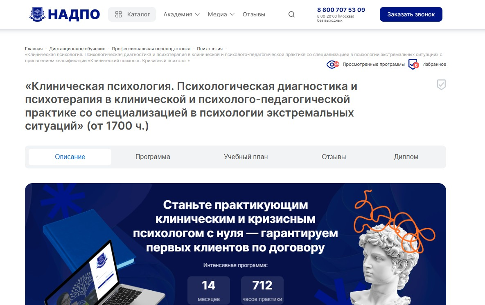⭐ Рейтинг: 4.8
- Сайт: nadpo.ru/do/klinicheskaya-psikhologiya-psikhologicheskaya-diagnostika-i-psikhoterapiya-v-klinicheskoy-i-psikholo_2064
- Полная стоимость: От 92 300 ₽ (тариф Start), до 133 000 ₽ (тариф Master) с возможностью налогового вычета 13%. Гранты на обучение не предусмотрены.
- Рассрочка: От 7 692 ₽ в месяц на срок до 14 месяцев, 0% переплат.
- Длительность: От 14 месяцев (от 1700 академических часов).
- Документ: Диплом о профессиональной переподготовке, вносится в ФИС ФРДО, действует по всей России.
- Трудоустройство: Поддержка в трудоустройстве: помощь в составлении резюме, карьерные консультации, подбор вакансий, подготовка к собеседованиям, бесплатный доступ к платформе с запросами от реальных клиентов.
Особенности курса:
Программа направлена на формирование практикующего специалиста в сфере клинической и кризисной помощи. Обучение построено на сочетании теории и глубокой практики: 712 часов отработки реальных кейсов, участие в практикумах и супервизиях, отработка сессий в тройках (клиент, психолог, наблюдатель). Курс соответствует ФГОС, включает психодиагностику, психотерапию, работу с травмой, суицидальным поведением и посттравматическим стрессом. Предусмотрена поддержка по запуску частной практики: помощь в продвижении, создании личного бренда, консультации по монетизации. Доступ к библиотекам ЛитРес и Библиоклуб, аудиолекции, круглосуточный доступ к материалам.
Преподаватели курса:
-
Тарасов Сергей Васильевич — кандидат психологических наук, доцент, стаж в науке и практике с 2000 года.
-
Егорова Наталья Николаевна — кандидат психологических наук, 22 года профессионального опыта.
-
Челнокова Ирина Александровна — кандидат психологических наук, специалист в области когнитивно-поведенческой терапии, член РА КПТ.
-
Санжапова Эльмира Викторовна — кандидат педагогических наук, доцент, более 18 лет в сфере образования и клинической психологии.
-
Галдина Александра Михайловна — клинический психолог и преподаватель, практикующий специалист с 2011 года.
Кратко о программе курса:
- Основы законодательства в сфере психологии и здравоохранения.
- Общая, возрастная, социальная и патопсихология.
- Нейропсихология, анатомия и физиология ЦНС.
- Психосоматика, основы психиатрии, диагностика расстройств.
- Практикумы по психодиагностике, патопсихологии, детской клинической психологии.
- Психотерапия: теория и практика, методы консультирования.
- Работа с посттравматическим стрессом, диагностика ПТСР, алгоритмы терапии.
- Психологическая помощь при утрате, разводе, насилии, возрастных кризисах.
- Технологии арт-терапии, работа с эмоциями и внутренними ресурсами.
- Дистанционное консультирование, профилактика выгорания у специалистов.
- Суицидальное поведение: диагностика и интервенция.
- Дистанционные практикумы, воркшопы, супервизии, отработка сессий.
- Методы продвижения личного бренда, работа в интернете, ведение профиля.
Чему научитесь:
Вы научитесь проводить диагностику и психотерапию в кризисных и травмирующих ситуациях, помогать клиентам с посттравматическим стрессом, паническими атаками, эмоциональным выгоранием. Освоите методы работы с семьёй, детьми, подростками, научитесь оказывать экстренную психологическую помощь и запускать частную практику.
Преимущества и особенности:
- 712 часов практики на реальных кейсах с обратной связью от преподавателей.
- Гарантированное трудоустройство: доступ к платформе с клиентами и карьерное сопровождение.
- Соответствие ФГОС, диплом вносится в государственный реестр ФРДО.
- Поддержка по созданию личного бренда: помощь в продвижении, наставничество эксперта.
- Бессрочный доступ к курсу и библиотекам ЛитРес, Библиоклуб.
- Индивидуальные консультации, воркшопы, практика в тройках и групповая супервизия.
- 0% рассрочка от 7 692 ₽ в месяц, возможность налогового вычета.
Читайте отзывы учеников:
Слушатели отмечают высокий уровень преподавания, актуальность материалов и насыщенную практическую часть. Многие подчёркивают, что курс помог выйти в профессию с нуля, получил первых клиентов через платформу и успешно запустил частную практику. Также отмечают поддержку карьерного отдела, качество видео и аудио-лекций, удобство платформы и вовлечённость кураторов.
Профессиональная переподготовка по программе психолог-консультант – Institute of Online Professions
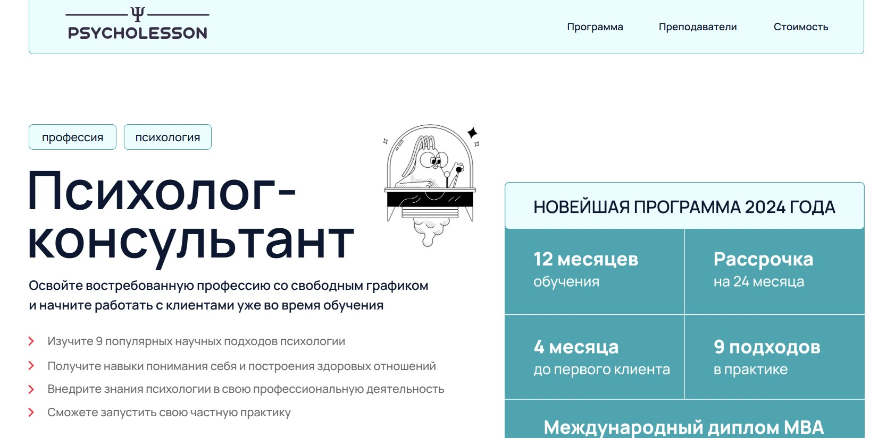⭐ Рейтинг: 4.8
- Сайт: psycholesson.ru/psy-consultantP
- Полная стоимость: от 342 427 ₽, возможна оплата по частям; при оплате можно подать документы на налоговый вычет по НДФЛ.
- Рассрочка: от 14 268 ₽ в месяц на срок до 24 месяцев через партнёрские банки — Альфа-Банк, Т-Банк, СберБанк, Почта Банк.
- Длительность: 12 месяцев (12 основных модулей + бонус-курс).
- Документ: Диплом о профессиональной переподготовке с внесением в ФИС ФРДО, европейский MBA-диплом от Open European Academy (Прага), диплом образовательного центра, 12 сертификатов по модулям.
- Трудоустройство: Поддержка при запуске частной практики — помощь с оформлением профиля на агрегаторах, привлечение первых клиентов, работа с личным брендом.
Особенности курса:
Программа охватывает 1280 часов и включает глубокое изучение девяти научных направлений психологии. Обучение построено вокруг практики: студенты начинают работать с кейсами уже с третьей недели. Доступ к материалам остаётся навсегда, предусмотрен индивидуальный разбор заданий, регулярные интервизии и групповая поддержка. Учебные группы небольшие, формат гибкий — подойдёт тем, кто совмещает учёбу с работой. Продуктивность закрепляется через клуб чтения, разбор фильмов, обсуждение реальных случаев и практические отработки с преподавателями.
Преподаватели курса:
-
Колошина Татьяна — кандидат психологических наук, клинический психолог, доцент кафедры РГГУ, эксперт по телесно-ориентированной терапии.
-
Шуляк Алёна — практикующий психолог-консультант, обучающий терапевт, специалист по полимодальному подходу, схема-терапии и экзистенциальному направлению.
-
Синицина Дарья — контекстуально-поведенческий психолог, специалист по терапии принятия и ответственности, ДПДГ.
-
Высоцкая Валерия — практикующий психолог, владеет когнитивно-поведенческим подходом, арт-терапией, телесно-ориентированной техникой.
-
Белашова Алла — психолог-сексолог, специалист по EMDR, ACT, работа с травматичными переживаниями.
-
Гуревич Татьяна — ведущая терапевтических групп, работает со схема-терапией, трансактным анализом, ACT.
-
Ушакова Елена — клинический психолог, опыт в КПТ, ACT, схема-терапии.
-
Агошкова Анна — психиатр, психотерапевт, член АКПН, специалист когнитивно-поведенческого направления.
Кратко о программе курса:
- Модуль 1: Основы профессии — этика, сеттинг, первая сессия, эмпатия, невербальное общение.
- Модуль 2: Эффективная работа с клиентом — навыки ведения терапии, построение доверия.
- Модуль 3: Когнитивно-поведенческая терапия — диагностика и коррекция когнитивных искажений.
- Модуль 4: Терапия принятия и ответственности (ACT) — работа с внутренними барьерами и ценностями.
- Модуль 5: Схема-терапия — проработка глубинных паттернов личности.
- Модуль 6: Телесно-ориентированная терапия — связь тела и психики.
- Модуль 7: Арт-терапия — методы работы через творчество.
- Модуль 8: Транзактный анализ — анализ эго-состояний и скрытых контрактов.
- Модуль 9: Сексология — консультирование по вопросам половой идентичности и отношений.
- Модуль 10: Возрастная психология — особенности работы в разные периоды жизни.
- Модуль 11: Системная семейная терапия — работа с динамикой в семье.
- Модуль 12: Коучинг — цели, мотивация, развитие потенциала.
- Бонус-курс: Продвижение личного бренда — создание аккаунта, работа с аудиторией, контент-план, продвижение на агрегаторах.
Чему научитесь:
Освоите ключевые научные подходы в психологии, научитесь проводить консультации по запросам клиентов — тревога, депрессия, отношения, самооценка, стресс. Получите навыки диагностики, интервизии, ведения личной практики и привлечения клиентов через digital-каналы.
Преимущества и особенности:
- Практика с первых недель — студенты начинают отрабатывать навыки уже с третьей недели.
- Доступ к курсу бессрочно — можно возвращаться к материалам в любое время.
- Лицензированная образовательная программа, соответствующая требованиям Минпросвещения и ФИС ФРДО.
- Членство в ОППЛ для выпускников — признание в профессиональном сообществе.
- Гарантия возврата средств — 100% возврат в течение 21 дня при неудовлетворённости.
- Помощь в запуске практики — оформление профиля, продвижение, поиск первых клиентов.
- Работа в малых группах с обратной связью от наставников и модераторов.
- Интенсивная практика через интервизии, клубы чтения и разборы кейсов.
Читайте отзывы учеников:
Выпускники отмечают высокий уровень преподавателей, актуальность материала и сильную практическую составляющую. Многие подчёркивают, что ушли с курса уже с первыми клиентами и чётким пониманием, как выстраивать консультации. Особенно ценят поддержку кураторов, гибкий график и бонус по продвижению — курс помогает не только научиться, но и заявить о себе как о специалисте.
Профессиональная переподготовка по практической психологии – Академия МОАН (УДПО)
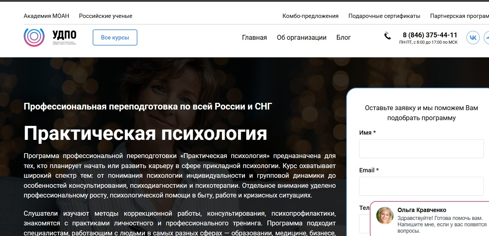⭐ Рейтинг: 4.7
- Сайт: udpo.info/prakticheskaya-psihologiya
- Полная стоимость: от 18 499 ₽ до 27 999 ₽ в зависимости от объема программы. Доступен налоговый вычет. Грант на обучение не предоставляется.
- Рассрочка: Беспроцентная рассрочка напрямую от университета — без переплат и привлечения банков.
- Длительность: от 2 до 12 месяцев (252–1400 академических часов).
- Документ: Диплом о профессиональной переподготовке, соответствующий второму высшему образованию.
- Трудоустройство: Поддержка в трудоустройстве не указана, но программа включает подготовку к практике в бизнесе, образовании и социальной сфере.
Особенности курса:
Обучение построено на применении современных дистанционных технологий, что позволяет совмещать занятия с работой, семьей и личной жизнью. Учащиеся сами формируют график — старт возможен в любой день. Программа охватывает ключевые направления прикладной психологии: диагностика, коррекция, консультирование, профилактика и работа в кризисных ситуациях. После завершения — вы получаете официальный документ, который регистрируется в ФИС ФРДО. Наличие возможного налогового вычета делает обучение ещё более доступным.
Кратко о программе курса:
- Особенности формирования личности и межличностного взаимодействия.
- Основы психодиагностики и тестирования.
- Методы психологического консультирования и поддержки.
- Профессиональный и личностный рост.
- Работа с эмоциями, мотивацией и кризисными состояниями.
- Психотерапевтические подходы: гуманистический, бихевиористский, психоаналитический.
- Коррекционная работа и психопрофилактика.
- Применение психологии в бизнесе, медицине и образовании.
- Групповая динамика и управление конфликтами.
- Профессиональная этика и взаимодействие с коллегами.
Чему научитесь:
Вы освоите инструменты диагностики, научитесь проводить консультации, работать с личностными и профессиональными кризисами. Сможете применять знания в разных сферах — от бизнеса до социальной помощи. Курс даст практические навыки и системное понимание психологии.
Преимущества и особенности:
- Дистанционное обучение — учитесь, где и когда удобно, без отрыва от жизни.
- Старт в любой день — не нужно ждать начала набора.
- Официальный диплом, приравненный ко второму высшему образованию.
- Беспроцентная рассрочка от образовательной организации — всё прописано в договоре.
- Молниеносный доступ к скану диплома — документы не придётся ждать неделями.
- Возможность получить налоговый вычет — подтверждённые документы выдаются сразу.
Читайте отзывы учеников:
Слушатели отмечают практическую пользу курса: знания можно сразу применять в работе. Особенно ценят модули по теориям личности, мотивации и эмоциям. Отмечают гибкость формата — можно учиться без спешки, учитывая личные обстоятельства. Некоторые делятся, что технические сбои в системе решались быстро службой поддержки. Многие решили продолжить обучение после окончания программы.
Курс клинической психологии – Московская школа практической психологии (МШПП)
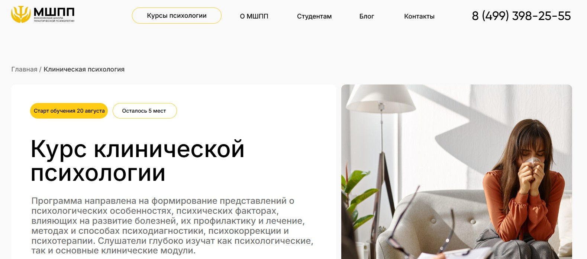⭐ Рейтинг: 4.7
- Сайт: mspp.online/kursy/klinicheskij-psikholog-obuchenie
- Полная стоимость: От 130 000 рублей, возможен налоговый вычет 13%. Гранты на обучение не предусмотрены.
- Рассрочка: От 3 650 ₽/мес на срок от 3 до 36 месяцев — доступна от школы и банков-партнеров.
- Длительность: 18 месяцев, включая подготовку к итоговой аттестации.
- Документ: Диплом о профессиональной переподготовке установленного образца, действующий на основании государственной лицензии. Дополнительно — международный диплом MBA по программе «Эксперт».
- Трудоустройство: Поддержка карьерного центра: помощь в поиске работы, составлении резюме, подготовке к собеседованиям, выбору работодателя и адаптации на новом месте.
Особенности курса:
Обучение проводится в формате дистанционного образования с полной поддержкой. Программа включает 1300–1420 академических часов, из них 150 часов — практика. Уделено особое внимание отработке навыков: занятия в мини-группах до 5 человек, супервизия, тройки, разбор кейсов. Доступна уникальная платформа без сбоев, поддержка 24/7, чат с ментором. Дополнительные модули: личный бренд, онлайн-консультирование, этичное продвижение. Есть закрытое сообщество выпускников и клуб с досугом от преподавателей.
Кратко о программе курса:
- Общая психология — 72 часа
- Психология личности — 54 часа
- Возрастная психология и психология развития — 54 часа
- Психологическое консультирование — 72 часа
- Основы клинической психологии — 54 часа
- Основы психиатрии — 36 часов
- Анатомия и физиология ЦНС — 36 часов
- Физиология сенсорных систем и высшей нервной деятельности — 36 часов
- Психофизиология — 54 часа
- Патопсихология — 54 часа
- Нейропсихология — 54 часа
- Современные методы оценки расстройств — 54 часа
- Психотерапия зависимого поведения — 72 часа
- Психология аномального развития — 36 часов
- Диагностика проективными методами — 54 часа
- Методы патопсихологической диагностики — 54 часа
- Психосоматика и диагностика — 54 часа
- Дефектология — 54 часа
- Помощь в кризисных ситуациях — 54 часа
- Теории личности в клинической практике — 54 часа
- Нарушения развития у детей и подростков — 54 часа
- Клиническая психология в гериатрии — 54 часа
- Судебно-психологическая экспертиза — 54 часа
- Правовое регулирование деятельности — 54 часа
- Бонус: онлайн-кабинет психолога, личный бренд, этичное продвижение
Чему научитесь:
Получите глубокие знания в психологии, психиатрии и нейропсихологии. Освоите диагностику, психокоррекцию и терапию. Научитесь работать с клиентами, проводить консультации и строить частную практику.
Преимущества и особенности:
- Диплом с международным признанием и правом работать с иностранными клиентами.
- Практика в группах до 5 человек — в 3 раза больше, чем в обычных вузах.
- Преподаватели — действующие практикующие психологи и психотерапевты.
- Гарантия трудоустройства: карьерный центр сопровождает до завершения испытательного срока.
- Гибкие формы оплаты и рассрочка без переплат от самой школы.
- Международный диплом MBA при выборе тарифа «Эксперт».
- Доступ к закрытому сообществу, менторству и профессиональному росту.
Читайте отзывы учеников:
Слушатели отмечают высокий уровень преподавания, реальную практическую пользу и поддержку кураторов. Многие подчеркивают, что курс помог сменить профессию, выйти на доход от 120 000 ₽ в месяц и начать частную практику. Особенно ценят формат «тройки», супервизии и удобную образовательную платформу без задержек.
Курс по нутрициологии для начинающих – Skillbox
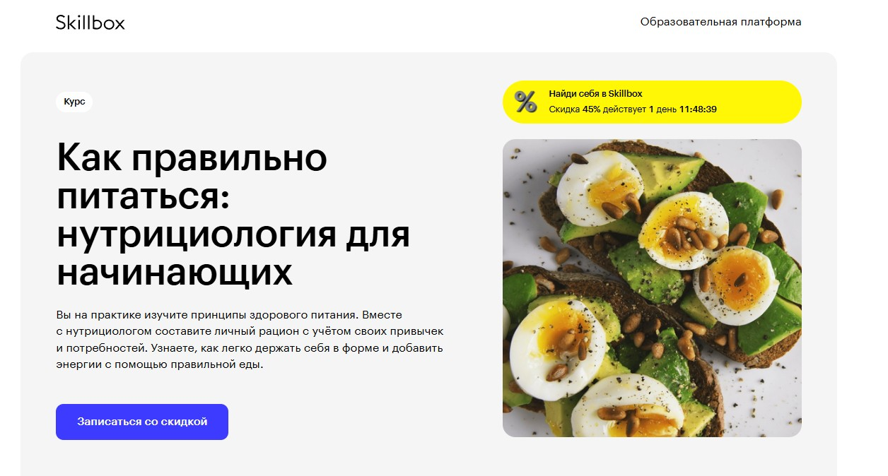⭐ Рейтинг: 4.7
- Сайт: skillbox.ru/course/psy_cons
- Полная стоимость: 3 575 ₽/мес при скидке 45%, доступен налоговый вычет после завершения.
- Рассрочка: 3 575 ₽ в месяц на 6 месяцев без переплат.
- Длительность: 1 месяц.
- Документ: Сертификат об окончании курса.
- Трудоустройство: Программа не включает трудоустройство, но развивает личную эффективность и полезные привычки.
Особенности курса:
Обучение построено на практике и реальных задачах. Вы разберётесь в основах сбалансированного питания, научитесь понимать состав продуктов и создавать рацион без жёстких ограничений. В программу включён бонусный модуль от специалиста UNICEF по детскому питанию. Общение с кураторами и единомышленниками в Telegram-чате обеспечивает поддержку на всех этапах. Все материалы доступны навсегда — можно пересматривать даже после завершения.
Кратко о программе курса:
- Что такое правильное питание и зачем оно нужно.
- Составление сбалансированного рациона.
- Как работают популярные диеты и в чём их риски.
- Разбор мифов о еде и метаболизме.
- Умение читать этикетки и выбирать продукты.
- Организация кухонного пространства и хранение пищи.
- Готовка, которая сохраняет пользу продуктов.
- Питание в кафе, на работе и в поездках.
- Бонус: как выстроить рацион для детей с экспертами UNICEF.
- Итоговая работа: личный семидневный рацион.
Чему научитесь:
Создадите устойчивую систему питания без голодовок, научитесь выбирать полезные продукты, готовить с пользой и поддерживать вес. Сможете строить меню для всей семьи и не срываться в стрессовых ситуациях.
Преимущества и особенности:
- Практические задания с обратной связью от экспертов.
- Доступ к материалам и чату навсегда.
- Участие в живых вебинарах и общение в учебном комьюнити.
- Индивидуальный подход с учётом привычек и образа жизни.
- Бонус от специалиста по детскому питанию.
- Обучение совмещается с работой — всего 3–4 часа в неделю.
- Сертификат, подтверждающий освоение навыков.
Читайте отзывы учеников:
Обучающиеся отмечают понятную подачу материала, практическую пользу и поддержку кураторов. Многие уточняют, что ранее пробовали диеты, но только здесь нашли устойчивую систему. Подчёркивается качество видео, доступность спикеров и полезность бонусов. Большинство рекомендует курс тем, кто хочет изменить привычки без стресса.
Профессиональная переподготовка по клинической психологии – Институт Профессионального Образования
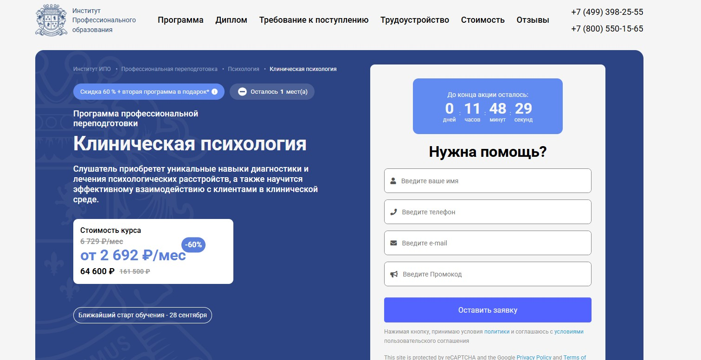⭐ Рейтинг: 4.7
- Сайт: ipo.msk.ru/professionalnaja-perepodgotovka/psihologija/klinicheskaya-psikhologiya/
- Полная стоимость: от 57 500 ₽ вместо 143 800 ₽. Возможен налоговый вычет до 13% от суммы оплаты.
- Рассрочка: от 2 396 ₽ в месяц на 24 месяца без переплат.
- Длительность: 854 часа – 10 месяцев при нагрузке 10–12 часов в неделю.
- Документ: Диплом о профессиональной переподготовке, действующий на всей территории РФ, дающий право на консультирование.
- Трудоустройство: Поддержка в трудоустройстве: помощь с резюме, подготовка к собеседованиям, продвижение по карьерным каналам, рассылка вакансий, доступ к закрытому комьюнити с экспертами.
Особенности курса:
Обучение построено на практико-ориентированной методике с регулярными онлайн-встречами, кейсами и вебинарами от практикующих психологов. Программа охватывает ключевые области клинической психологии: психодиагностику, психосоматику, патопсихологию, нейропсихологию и системную психотерапию. Учащиеся получают доступ к библиотеке ЮРАЙТ, киноклубу и менторству, участвуют в групповой практике, работают с реальными случаями. Учебный процесс проходит в личном кабинете с гибким графиком и возможностью возвращения средств за неосвоенные модули.
Преподаватели курса:
-
Наталья Николаевна Бербер — кандидат психологических наук, практикующий клинический психолог с многолетним опытом.
-
Татьяна Геннадьевна Урывчикова — клинический психолог, нейропсихолог, член Ассоциации когнитивно-поведенческой психотерапии.
-
Анна Алексеевна Шавырина — практикующий преподаватель в области психологического консультирования.
Кратко о программе курса:
- Общая психология (72 ч)
- Психодиагностика (72 ч)
- Практическая психология (72 ч)
- Анатомия центральной нервной системы (72 ч)
- Физиология высшей нервной деятельности (72 ч)
- Нейропсихология (72 ч)
- Медицинское право (54 ч)
- Введение в клиническую психологию (18 ч)
- Основные понятия психиатрии (18 ч)
- Патопсихология и патопсихологическая диагностика (18 ч)
- Нейропсихологические синдромы (18 ч)
- Психосоматика и психоаналитические концепции (18 ч)
- Психология аномального развития (36 ч)
- Психологическое консультирование (72 ч)
- Профессиональная этика (54 ч)
- Практика, решение кейсов, подготовка и защита итоговой работы (54 ч + 8 ч)
Чему научитесь:
Вы освоите методы диагностики психических расстройств, научитесь применять психодиагностические и терапевтические техники, работать с клиентами в клинической среде и взаимодействовать с другими специалистами.
Преимущества и особенности:
- Официальный диплом, дающий право на профессиональную деятельность
- Доступ к реальной практике: работа в парах, кейсы, менторство
- Гибкий график и дистанционное обучение с возможностью учиться в удобное время
- Поддержка в трудоустройстве: составление резюме, тренировка собеседований, рассылка в компаниях-партнерах
- Дополнительные курсы в подарок и бессрочный доступ к материалам
- Рассрочка без переплат и возможность вернуть налог
Читайте отзывы учеников:
Выпускники высоко оценивают качество материалов, профессионализм преподавателей и системный подход к обучению. Многие отмечают, что курс помог им начать частную практику, устроиться в медицинские и консультативные центры. Регулярные вебинары, обратная связь и поддержка куратора — частые плюсы в отзывах. Более 3500 откликов на Яндекс, EDDU и Отзовик подтверждают доверие к образовательной программе.
Клиническая психология – АНО ВО «Восточно-Европейский Институт Психоанализа»
⭐ Рейтинг: 4.6
- Сайт: eeip.ru/obrazovanie/dopolnitelnoe-professionalnoe-obrazovanie/klinicheskaya-psikhologiya/
- Полная стоимость: 160 000 рублей за весь курс (80 000 ₽ за семестр), возможен налоговый вычет по расходам на образование.
- Рассрочка: На 4 месяца без переплат — по 20 000 рублей в месяц за семестр.
- Длительность: 1 год (2 семестра).
- Документ: Диплом о профессиональной переподготовке по программе «Клиническая психология».
- Трудоустройство: Поддержка в запуске частной практики, доступ к методической базе, участие в студенческих супервизиях и обмен опытом с практикующими специалистами.
Особенности курса:
Программа ориентирована на специалистов с высшим психологическим или медицинским образованием, желающих получить практико-ориентированные компетенции в сфере психического здоровья. Обучение проходит в очно-заочной (вечерней) форме, что позволяет совмещать учёбу с работой. Учебный план включает как фундаментальные дисциплины, так и интенсивные практикумы. Особое внимание уделено психодиагностике, патопсихологии, кризисной помощи и работе с зависимыми состояниями. Программа соответствует требованиям профессиональных стандартов и готовит к самостоятельной практике.
Кратко о программе курса:
- Основы общей психологии и психологии личности
- Возрастная психология
- Психология эффективного общения
- Основы клинической психологии
- Нейропсихология
- Общая и частная психиатрия
- Психология соматических больных
- Организация здравоохранения
- Психология аномального развития
- Основы психогигиены и психопрофилактики
- Основы психологического консультирования
- Основы психотерапии
- Введение в психоанализ
- Практикум по психологическому консультированию
- Практикум по психологии аномального развития
- Клиническая психодиагностика
- Патопсихология
- Девиантология
- Кризисная психология
- Психология зависимого поведения
- Основы психологической коррекции
- Практикум по клинической психодиагностике
- Практикум по психологии соматических больных
- Практикум по психологии зависимого поведения
Чему научитесь:
Вы освоите методы диагностики, коррекции и психотерапевтической поддержки при различных психических расстройствах, научитесь работать с клиентами в кризисах, зависимостях и соматическими проявлениями тревожности, разовьёте навыки клинического мышления и профессиональной этики.
Преимущества и особенности:
- Обучение ведут практикующие психологи-психоаналитики, кандидаты наук с большим стажем.
- Форма обучения — очно-заочная (вечерняя), подходит для работающих специалистов.
- Доступна беспроцентная рассрочка на оплату каждого семестра.
- Программа включает практикумы, супервизии и формирует готовность к самостоятельной практике.
- Выпускники получают диплом, позволяющий работать по специальности в государственных и частных учреждениях.
- Институт поддерживает тёплую, психологически безопасную атмосферу, способствующую личностному развитию.
Читайте отзывы учеников:
Слушатели отмечают высокую вовлечённость преподавателей, свободу мышления на занятиях и возможность высказывать личные гипотезы. Многие подчёркивают, что обучение стало не только профессиональным, но и личностным прорывом. Студенты ценят открытость среды, возможность продолжать посещать лекции после выпуска, а также практическую направленность курсов и регулярные встречи с зарубежными экспертами. Многие называют ВЕИП «вторым домом» и продолжают участвовать в жизни института даже спустя годы после окончания.